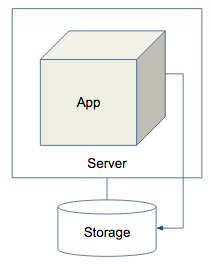
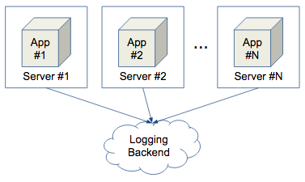
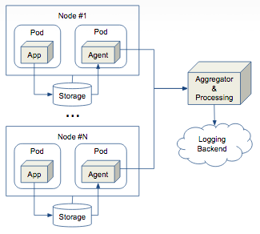
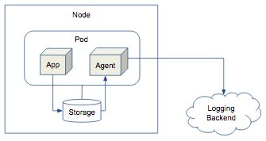
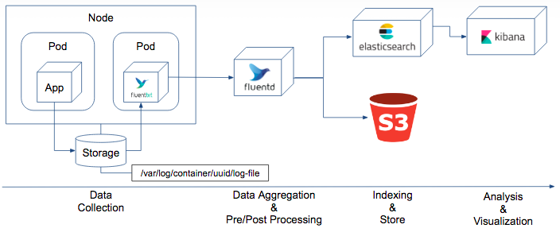
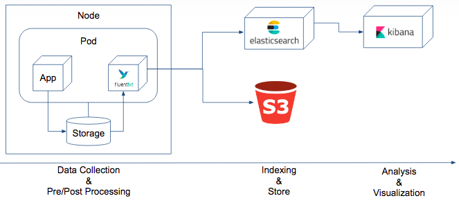
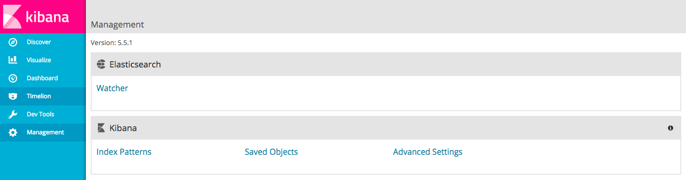
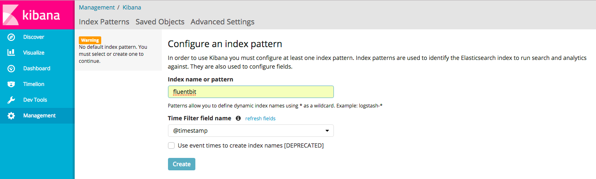
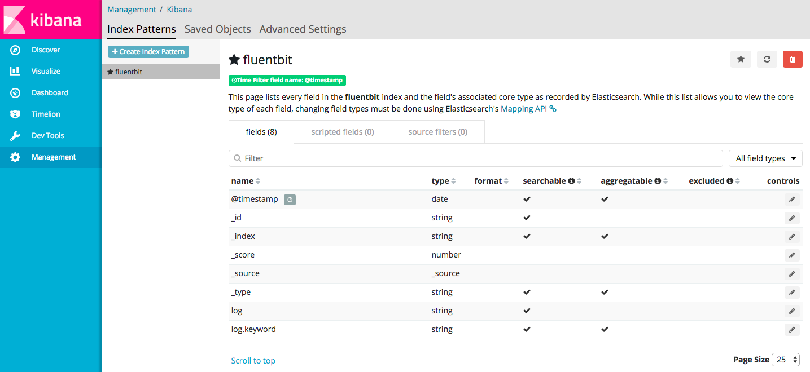
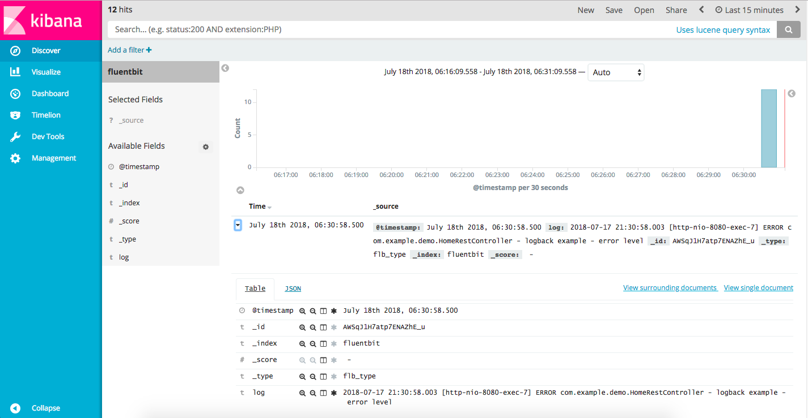

Logging in kubernetes

Cloud Native 환경에서 Logging Architecture의 변화
Legacy

- 고사양의 서버에 Application을 크게 운영
- Log를 Application이 실행 중인 서버 내부에 저장
- 개발자/운영자는 서버 내부에 접속해 Log를 확인
Cloud Native

- Application을 작게 운영하고 필요할 때 마다 확장
- 다중 인스턴스의 로그를 효율적으로 검색하기 위해 외부 Log 시스템에 저장
- 개발자/운영자는 서버에 직접 접속하지 않고 외부 Log Backend에서 로그 확인
Cloud Native Logging Architecture
Overview
DaemonSet Pattern

- App Console Log가 각 Node의 Storage에 자동 저장
- 각 Node의 Agent가 Log를 Aggregator로 전달
- Log data를 전/후 처리 후 Backend로 전달
Sidecar Pattern

- App Log를 Pod의 Storage에 파일로 저장(Log4j 등 사용)
- Pod의 Agent가 Log data를 전/후 처리 후 Backend로 전달
DaemonSet Pattern 상세 Architecture

- App Console Log가 각 Node의 Storage에 자동 저장
- Fluentbit가 각 Node의 Log 수집해 FluentD로 전달
- FluentD가 수집한 Log를 전/후 처리 후 ElasticSearch로 전달
- Log raw data를 S3와 같은 저장소에 동시 전달 가능(Log Data 백업 활용)
- Kibana를 통해 ES의 Log data 검색/분석 및 시각화
Sidecar Pattern 상세 Architecture

- App Log를 Pod의 Storage에 파일로 저장(Log4j 등 사용)
- Fluentbit가 저장된 Log를 전/후 처리 후 ElasticSearch로 전달.
- Log raw data를 S3와 같은 저장소에 동시 전달 가능(Log Data 백업 활용)
- Kibana를 통해 ES의 Log data 검색/분석 및 시각화
Logging 실습
Sidecar Pattern
Demo Application Download 및 Build
Demo Application Download
$ git clone https://github.com/cloudz-labs/spring-boot-logging-demo $ cd spring-boot-logging-demo
Maven build
$ mvn clean package
Docker build
$ docker build -t logging-demo . $ docker images REPOSITORY TAG IMAGE ID CREATED SIZE logging-demo latest 1444f50dcadc 9 seconds ago 117M
Application 실행 및 Web Browser에서 localhost:8080 접속.
$ docker run -p 8080:8080 logging-demo
Docker Container에 접속하여 log file 확인
$ docker ps CONTAINER ID IMAGE COMMAND CREATED STATUS PORTS NAMES 79e28edfbb12 logging-demo "java -Djava.securit…" 4 minutes ago Up 4 minutes 0.0.0.0:8080->8080/tcp gifted_ride $ docker exec -it 79e28edfbb12 sh / # tail -f logs/spring-boot-logging.log .... 2018-07-16 17:31:40.153 [http-nio-8080-exec-1] INFO o.s.web.servlet.DispatcherServlet - FrameworkServlet 'dispatcherServlet': initialization completed in 86 ms 2018-07-16 17:31:40.315 [http-nio-8080-exec-1] INFO com.example.demo.HomeRestController - logback example - info level 2018-07-16 17:31:40.316 [http-nio-8080-exec-1] WARN com.example.demo.HomeRestController - logback example - warn level 2018-07-16 17:31:40.318 [http-nio-8080-exec-1] ERROR com.example.demo.HomeRestController - logback example - error level
Deom Application 구조
Logback 설정해 /logs directory 하위에 log message를 file로 저장
Log message 출력하는 HomeRestController
package com.example.demo; import org.slf4j.Logger; import org.slf4j.LoggerFactory; import org.springframework.web.bind.annotation.RequestMapping; import org.springframework.web.bind.annotation.RequestMethod; import org.springframework.web.bind.annotation.RestController; @RestController public class HomeRestController { private final Logger logger = LoggerFactory.getLogger(this.getClass()); @RequestMapping(value = "/", method = RequestMethod.GET) public String getHome() { logger.debug("logback example - debug level"); logger.info("logback example - info level"); logger.warn("logback example - warn level"); logger.error("logback example - error level"); return "Hello World!"; } }
Logback 설정
<logback-spring.xml> <?xml version="1.0" encoding="UTF-8"?> <configuration> <!-- Send debug messages to System.out --> <appender name="STDOUT" class="ch.qos.logback.core.ConsoleAppender"> <!-- By default, encoders are assigned the type ch.qos.logback.classic.encoder.PatternLayoutEncoder --> <encoder> <pattern>%d{HH:mm:ss.SSS} [%thread] %-5level %logger{5} - %msg%n</pattern> </encoder> </appender> <!-- Send debug message to file --> <appender name="FILE" class="ch.qos.logback.core.rolling.RollingFileAppender"> <file>logs/spring-boot-logging.log</file> <encoder class="ch.qos.logback.classic.encoder.PatternLayoutEncoder"> <pattern>%d{yyyy-MM-dd HH:mm:ss.SSS} [%thread] %-5level %logger{36} - %msg%n</pattern> </encoder> <rollingPolicy class="ch.qos.logback.core.rolling.TimeBasedRollingPolicy"> <fileNamePattern>logs/spring-boot-logging.%d{yyyy-MM-dd}_%i.log</fileNamePattern> <!-- each file should be at most 10MB, keep 30 days worth of history --> <maxHistory>30</maxHistory> <timeBasedFileNamingAndTriggeringPolicy class="ch.qos.logback.core.rolling.SizeAndTimeBasedFNATP"> <maxFileSize>10MB</maxFileSize> </timeBasedFileNamingAndTriggeringPolicy> </rollingPolicy> </appender> <root level="INFO"> <appender-ref ref="STDOUT" /> <appender-ref ref="FILE" /> </root> </configuration>
Demo Application 및 Fluentbit 배포
Fluentbit Configmap에 Elasticsearch의 정보 설정
$ vi configmap.yaml ... - name: fluent-bit env: - name: FLUENT_ELASTICSEARCH_HOST value: "elasticsearch.kube-system.svc.cluster.local" - name: FLUENT_ELASTICSEARCH_PORT value: "9200"- FLUENT_ELASTICSEARCH_HOST의 value : Elasticsearch의 endpoint. IP or Domain or Service
- FLUENT_ELASTICSEARCH_PORT의 value : Elasticsearch의 port
Fluentbit Configmap 배포
$ kubectl apply -f configmap.yaml $ kubectl get cm NAME DATA AGE fluent-bit-config 4 1m
Demo Application Deployment yaml의 docker image 정보 수정(default 그대로 사용해도 무관)
$ vi deployment.yaml ... spec: containers: - name: logging-demo image: dtlabs/spring-boot-logging-demo:latestDemo Application 및 Fluentbit Kubernetes Deployment 배포
$ kubectl apply -f deployment.yaml $ kubectl get deploy NAME DESIRED CURRENT UP-TO-DATE AVAILABLE AGE logging-demo 1 1 1 1 1m $ kubectl get po NAME READY STATUS RESTARTS AGE logging-demo-6c659fb7cb-zndhs 2/2 Running 0 1m
Demo Application에 Port Forwarding 설정 > Web browser에서 localhost:8080으로 접속
$ kubectl port-forward logging-demo-6c659fb7cb-zndhs 8080:8080 Forwarding from 127.0.0.1:8080 -> 8080
Demo Application 및 Fluentbit Container에 접속해 Log file 확인
$ kubectl exec -it logging-demo-6c659fb7cb-zndhs -c logging-demo sh / # tail -f /logs/spring-boot-logging.log 2018-07-17 07:47:59.751 [http-nio-8080-exec-5] INFO com.example.demo.HomeRestController - logback example - info level $ kubectl exec -it logging-demo-6c659fb7cb-zndhs -c fluent-bit sh # tail -f /var/logs/spring-boot-logging.log 2018-07-17 07:47:59.751 [http-nio-8080-exec-5] INFO com.example.demo.HomeRestController - logback example - info level
Kibana Index Pattern 설정 및 Log message 검색
- Kibana 접속 > Left 메뉴 > Management 메뉴 선택 > Kibana Index Patterns 선택

- Index name or pattern input box에 fluentbit 입력 후 Time Filter field name combo box에 @timestamp 선택

- 정상적으로 생성 시 아래와 같은 모습

- Left 메뉴 > Discover 메뉴 선택 > Demo Application의 Log message 검색 됨

지금까지 Kubernetes 환경에서 Logging Architecture에 대해 살펴봤습니다.
Log message 전/후처리에 대한 상세한 내용은 향후 추가로 작성예정입니다.